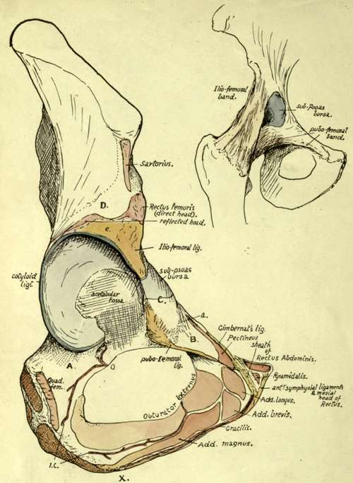
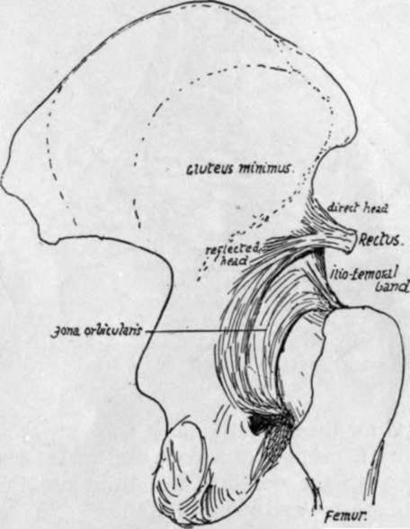
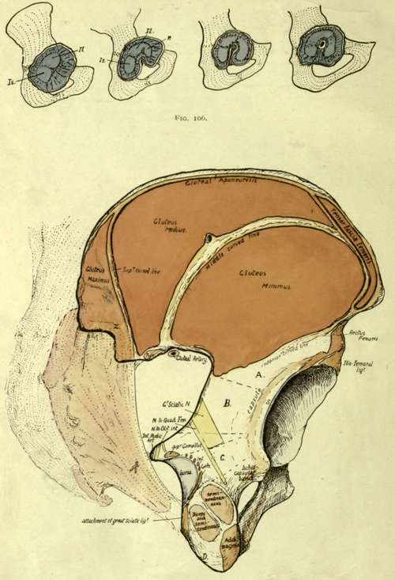

The Acetabular Region
Description
This section is from the book "The Anatomy Of The Human Skeleton", by J. Ernest Frazer. Also available from Amazon: The anatomy of the human skeleton.
The Acetabular Region
It has already been said that the three main elements of the bone are all represented in the acetabulum. The Ischium is credited with forming rather more than two-fifths, the Ilium with rather less than this, while the pubis accounts for the remaining fifth. But as a matter of fact the triradiate cartilage that separates these elements, almost till puberty, develops a variable number of small ossifying centres in the floor of the acetabulum : these may fuse to form a small separate bone, the os acctabuli, but in any case there is ultimate junction of the various parts, and the acetabular centres are usually described as forming a part of the pubic element.
The articular surface of the acetabulum surrounds on three sides the non-articular cotyloid or acetabular fossa, which contains the fatty tissue of the " Haversian gland," and opens below at the cotyloid notch. The notch is bridged across by the transverse ligament, a tendinous structure continuous with the fibro-cartilaginous cotyloid ligament that is attached to the whole length of the edge of the brim : vessels and nerves pass through the notch, under the transverse ligament, to enter the ligamentum teres. The fibrous basis of the ligamentum teres is attached to the ischial and iliac parts of the cotyloid fossa and to the transverse ligament : its synovial covering is attached to the whole margin of the fossa and the whole length of the transverse ligament below, covering the fossa but lying free on its surface. The round ligament is the remains of the original ventral wall of the capsule (Fig. 106). In the human embryo the Ischium and Ilium alone are concerned in the articulation with the femur and the capsule is attached round their ventral margin : the pubic cartilage is extracapsular. As the pubis extends it is still separated by the cellular capsule from the femur. Later it breaks through this capsule and becomes articular, the synovial cavity extending over it from the Ilium. In this way the original attachment of the capsule is only left on the Ischium as the fibrous basis of the Ligamentum teres. In the adult the pubic articular surface is still more or less distinct from the iliac surface, and the same distinction is usually marked on the rim by a shallow notch ; here the communication may take place of the joint with the sub-psoas bursa, between the Iliac and pubic parts of the capsule. Above this notch is the large rough area for the A-shaped Iho-femoral band, spreading on to the lower half or more of the anterior inferior spine, and below and internal to it is the area for the pubo-femoral band which extends inward along the front edge of the upper pubic ramus, overhanging the issuing obturator nerve.
Fig 104.-Outer view of the acetabular and ischio-pubic regions. A. is a region on the bone in front of the position of Quadratus femoris which is in relation with the tendon of Obturator externus and some loose iibro-fatty tissue that permits changes in place of the tendon with movement of the joint. B. is a sloping surface of bone which supports Pectineus but does not give origin to it ; the surface extends out to the ilio-pectineal eminence where the fascia covering the Pectineus (pubic portion of fascia lata) reaches the bone at a. The front of the eminence is roughened by fibres belonging to the pubofemoral group of ligaments. These are separated from the ilio-femoral set by an interval, apparent on the bone and marking the limit of the secondarily added pubic area of articular surface (see Fig. 106), where the synovial cavity is protruded as the sub-Psoas bursa ; this is seen in the smaller figure. The Psoas lies on the bursa and the surface C. D. is covered by Gluteus minimus, which arises above the dotted line ; below D. the muscle lies on the reflected head of the Rectus and the capsule of the joint. 0. and I.C. are branches of the obturator and internal circumflex arteries anastomosing round Obturator externus and giving twigs through the cotyloid notch into the cotyloid fossa and so into the lig. teres, which is attached round the margins of the fossa and to the transverse ligament that extends between the lips of the notch. X. marks an ill-defined depression on the margin, which indicates the spot where the origin of Adductor magnus passes from the outer side of the pubic ramus to the lower aspect of the ischial tuberosity ; it therefore also marks the hinder Hmit of origin of Gracilis.
The direct tendon of the Rectus fe-moris is attached to the upper part of the anterior inferior spine, so that it rests on the ilio-femoral band at its origin : outside this the line of its attachment passes downwards and backwards, to run into the cotyloid ligament and capsule at the top of the acetabulum, thus forming the reflected head. Observe that this must be under cover of Gluteus minimus, arising above the inferior curved hne (see Fig. 105).
At the back of the acetabulum synovial membrane comes over the cotyloid hgament and touches the bone : this occurs from the transverse ligament below to the reflected tendon of Rectus above. In front the synovial membrane does not transgress the cotyloid ligament, but passes nearly directly from it to the strong capsule.
There is only a slight capsular attachment behind the acetabulum, for there are no true transverse fibres on the back of the joint, and only a few of the inner marginal fibres of the circular group run to the bone in this region : a group of these below reach the upper ramus of ischium as the " ischio-capsular band".
Fig. 105.-Posterior view of the capsule of hip, showing the circular fibres and reflected tendon of Rectus ; this sends some fibres to the circular band.
Fig. 107.-Postero-external aspect of right os innominatum. The curved lines are somewhat diagram-matically drawn : for account see the text. Some of the fibres of the great sciatic ligament run on to the surface of the bone round x, and give origin here to part of G. maximus. The position of the sacrum and great ligament is indicated, with the origin of the muscle from it. A is the surface below the inferior curved line, covered by G. min. ; B, the area covered by Pyriformis, with the great sciatic nerve interposed ; C, covered by Obturator internus and Gemelli, which lie between the nerve and the bone, but have the nerve to Quadratus between them and the bone. The muscles mentioned are practically in a continuous curved plane, so that the areas A, Bt and C make a convex surface, continuously curved and smooth, round the acetabulum ; the muscles pass to the raised trochanter, so do not mould the bone by pressure. The lower aspect of the tuber ischii, below the facets for the hamstring muscles, shows two sloping surfaces, of which one looks outwards and gives origin to fibres of Adductor magnus (ischio-condylar portion), while the other looks inwards (D) and is covered by fibro-fatty tissue which is continuous round the great sacro-sciatic ligament with that of the ischio-rectal fossa : in this tissue is a badly-defined bursa which lies under the tuberosity in sitting, the hamstrings and Adductor moving to the outer side of the prominence when the limbs are bent for that purpose.
The posterior surface of the acetabular mass is covered by Pyriformis, and may give origin to some fibres of Gluteus minimus deep to this : the sciatic nerves, etc., and nerve to Quadratus femoris pass down on it. The thin floor of the acetabulum is occasionally, like the thinnest part of the iliac fossa, found to be perforated, and the hole is then closed by membrane.
Continue to: